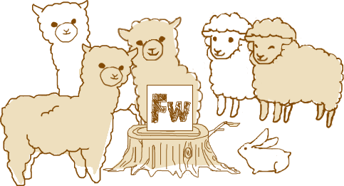

みんなで使おう！Fireworks！
〜Fireworksで画像最適化〜

自己紹介
株式会社EC studio でHTMLコーダーやってます、赤堀巴絵です。
EC studio デザインブログでコーダー向けネタやパフォーマンスアップネタを投稿してます。
Twitterは「tomo_e」でやってるのでよかったらフォローよろしくお願いします！
最近は趣味でイラストを描いたりもしてます。
目次
- FireworksとPhotoshopのPNG比較
- png8アルファチャンネルでさらに軽量化！
- FireworksとPhotoshopのJPEG比較
- JPEGマスクで見せたい部分をキレイに！
- まとめ
FireworksとPhotoshopのPNG比較
実はPNGで同じ画像を書き出すならFireworksのほうが画像を軽く書き出せます。
チャンクという画像情報以外のその他の情報がPhotoshopのほうが多いからです。
実際、FireworksとPhotoshopのPNG8で書き出した画像を比べてみましょう。
Fireworksで書き出したPNGの方が0.96KB軽いことがわかります。
さらにツールでPNGを最適化しよう！
ツールで不要な情報を削除した画像を比較してみようと思います。
今回使用したツールはpunypngというブラウザ上でチャンク情報を削除してくれるWebツールです。
Fireworks PNGでは29%ツールで圧縮することができたのですが、
Photoshop PNGでは1%しか圧縮できなかったのでサイズに変化がみられませんでした。
Photoshop PNGを軽量化する方法
PNGを書き出すのはFireworksの方が便利なことはわかりましたが、
Photoshop PNGでもさらにチャンク情報を削除する方法があります。
その方法はPhotoshopで書き出したPNGをFireworksで書き出し直すことです。
こうすればチャンク情報を削除することができますが、
かなり面倒な作業になるので最初からFireworksでデータを作成することをオススメします。
PNG8アルファチャンネルでさらに軽量化！
透過画像は通常ならPNG32で書き出しますが、
色数が少ない場合（256色以内）はPNG8アルファチャンネルを使うと画像を軽量化できます。
ただし、IE6は透過情報を表現してくれないので、AlphaImageLoaderやjavascriptで対応が必要です。
FireworksとPhotoshopのJPEG比較
JPEGの画質80をFireworksとPhotoshopで書き出して比較してみましょう。
FireworksとPhotoshopではデフォルトの圧縮率がFireworksのほうが圧縮率が高いです。
しかし、画質はPhotoshopよりも劣化するのであまり大きくないサイズで使用するのがオススメです。
パフォーマンスを意識するならJPEGもFireworksで書き出した方が軽量化できます。
JPEGマスクで見せたい部分をキレイに！
キレイに表示させたい部分とそうでない部分の圧縮率を変えて書き出しすることができます。
画像内のテキストなどに使うとキレイに画像を見せることができます。
こんな感じでキレイに表示したい部分にマスクをかけることができます。
JPEGマスクで書き出してみよう
今回はマスクがかかってるのがわかりやすいように、マスク以外を画質30で書き出してみます。
このようにテキストの部分とその他の部分の画質を変えて書き出すことが出来ます。
キレイに見せたい部分を画質で調節することで、さらに軽量化をおこなうことができます。
まとめ
Fireworksはパフォーマンスアップするにはとても使いやすいアプリケーションです。
でも！
キレイな画像を使いたい場合はPhotoshopには劣るので、
両方をうまく使い分けてユーザーに優しいウェブサイトを作っていきましょう！
ご清聴ありがとうございました
Special thanks! mukiSlide is made by Yusuke Nakanishi